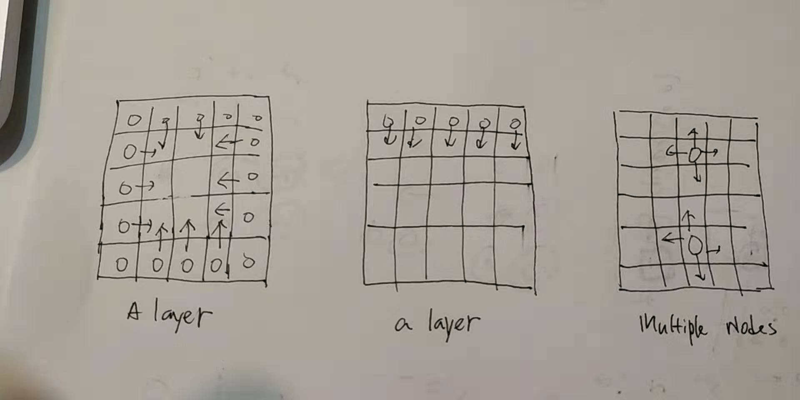

Introduction
The trivial alogrithms for BFS is Queue, DFS is recursion.
BFS only has one order, DFS has 3 different orders (preorder, inorder and postorder) [Inorder only works with binary tree]
-
BFS vs. DFS
BFS 很老实, it iterates the entire graph, tree, matrix layer by layer. Finally, it can traverse every node. A well designed DFS is smart, it can also find a target very quick in O(h)=O(lgn). It can also iterates every node in O(n).
BFS most likely applied with undirected graph (undirect adjacent list, matrix island), (directed) binary tree.
1). DFS start on a single node
2). BFS can start either on a single node, multiple nodes, or a layer.
BFS on a matrix island, visiting layer by layer.
Application: 934. Shortest Bridge
require a visited matrix and a queue.
public class BFSOnMatrix { private Queue<int[]> queue; private int[][] directions; public void bfsMark(int [][] matrix, int [][] startingPoints){ directions = new int[][]{{-1,0}, {1,0}, {0, -1}, {0, 1}}; queue = new LinkedList<>(); int row = matrix.length; int col = row == 0? 0: matrix[0].length; byte[][] visited = new byte[row][col]; for(int [] point: startingPoints){ queue.offer(point); visited[point[0]][point[1]] = 1; } int layer = 0; while(queue.size() != 0){ layer ++; int size = queue.size(); for(int i = 0; i < size; i++){ // a layer int [] point = queue.poll(); matrix[point[0]][point[1]] = layer; for(int [] dir: directions){ int nx = point[0] + dir[0]; int ny = point[1] + dir[1]; if(nx < 0 || ny < 0 || nx >= row || ny >= col){ continue; } if(visited[nx][ny] == 1){ continue; } queue.offer(new int[]{nx, ny}); visited[nx][ny] = 1; } } } } }Implementation attention: we need mark a node as visited when adding it to the queue. (this mark "visited" actually means already in the queue or has been queued.
-
BFS vs. Union Find
When finding connected component in a undirected graph, or matrix. Both union find and BFS can be applied, but union find is better when the graph is given in a list of edge.
-
Implementation of BFS
BFS is implemented with a queue (linkedlist), first add the root to queue.
** Compared to a binary tree, if BFS needs to run on graph or matrix, we also need a "visited (already queued)" data structure.
BFS properties
1). # of nodes in a row = queue size before poping up this row's first element.
2). it can scan the graph layer by layer (山火一层一层的烧）(starting on a single point, a line, a cycle)